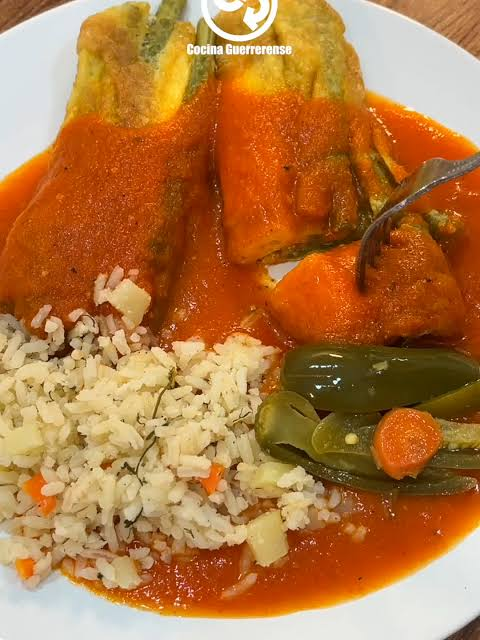

Semana Santa

La Semana Santa en Guatemala es una de las celebraciones religiosas y culturales más importantes del país.
Conmemora la pasión, muerte y resurrección de Jesucristo mediante procesiones, marchas fúnebres y vigilias.
Durante esta época, las calles se llenan de alfombras elaboradas con aserrín de colores, flores y otros materiales,
creando verdaderas obras de arte efímeras.
Esta tradición ha sido transmitida de generación en generación durante siglos, involucrando a familias enteras,
comunidades, artesanos, músicos y autoridades. Las fachadas de las casas también son decoradas, creando un ambiente único.
Además, representa la unión, el respeto y la diversidad cultural del país. También es un momento importante para la gastronomía,
donde se preparan platillos tradicionales especiales de la temporada.
Holy Week in Guatemala is one of the most important religious and cultural celebrations in the country.
It commemorates the passion, death, and resurrection of Jesus Christ through processions, vigils, and traditions.
During this time, streets are decorated with colorful carpets made of sawdust and flowers, creating beautiful temporary art.
This tradition has been passed down for generations and involves families, communities, and artists.
It also represents unity, respect, and cultural diversity, as well as an important time for traditional seasonal food.
Ejotes y Ejotes Envueltos

El ejote es una legumbre cuyo nombre proviene del náhuatl "exotl". También es conocido como judía, alubia o chaucha.
Es originario de América y ha sido cultivado desde tiempos antiguos en Centroamérica y Sudamérica.
Crece mejor en climas húmedos y suaves, y se recolecta cuando está joven para mantener su textura tierna.
Se utiliza en la cocina hervido, en ensaladas o a la parrilla.
En Guatemala, los ejotes envueltos son un platillo típico, especialmente durante la Semana Santa.
Consisten en ejotes cocidos, cubiertos con huevo batido, fritos y servidos con caldillo.
Nutricionalmente, son ricos en proteínas, vitaminas B6 y C, ácido fólico y tienen propiedades digestivas.
Green beans originate from the Americas and were cultivated in ancient times.
They are also known as beans or string beans in different regions.
They grow best in humid climates and are harvested young to keep them tender.
They are commonly boiled, used in salads, or grilled.
In Guatemala, wrapped green beans are a traditional dish, especially during Holy Week.
They are made by coating cooked green beans in egg, frying them, and serving them with sauce.
Nutritionally, they are rich in protein, vitamins B6 and C, and folic acid, and they support digestion.